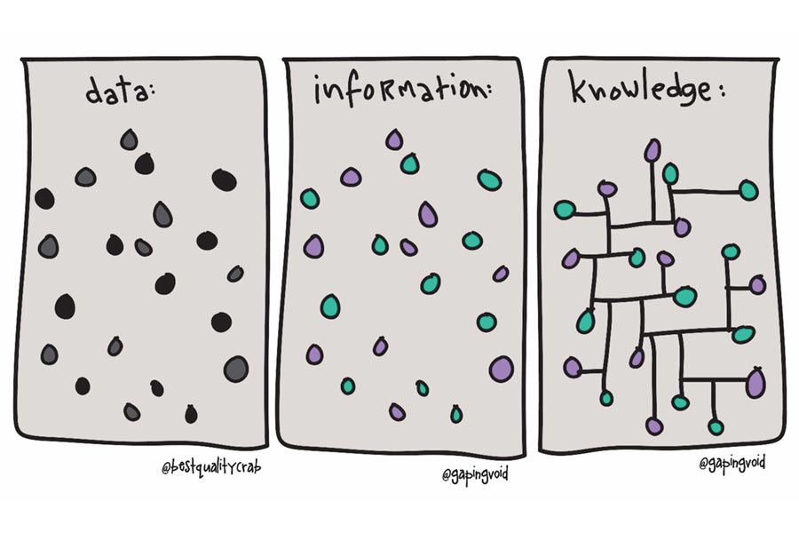

Perché proprio a noi?

Uno dei motivi per cui psicometria risulta un esame ostico è che spesso si fatica a trovare la connessione tra questa materia e la psicologia. Alcuni possono ritenere irrilevante conoscere la psicometria ai fine dell'esercizio professionale, altri possono far fatica a cogliere gli aspetti prettamente psicologici in una materia che può sembrare più un esame di statistica.
Non c'è niente di più sbagliato!
In ogni settore della psicologia è necessario avere le basi della psicometria:
- nella ricerca: tutto ciò che si apprende durante gli studi di psicologia è frutto di esperimenti e analisi statistiche. Pensiamo, ad esempio, al celebre esperimento di Milgram o agli studi sull'effetto spettatore, i ricercatori hanno applicato la psicometria per definire le scala di misura appropriate, scegliere le analisi statistiche adeguate ed dare un significato ai risultati ottenuti.
- lo psicologo clinico e il neuropsicologo, ad esempio, utilizzano la psicometria in fase di valutazione, in particolare nella scelta dello strumento e nella interpretazione data al risultato numerico. Somministrare un questionario per valutare i livelli di ansia o il test di Corsi per valutare la MBT visuo-spaziale implica saper poi dare un'interpretazione al numero ottenuto (chiamato puntegio grezzo) e questa è possibile grazie ai calcoli fatti relativi a media, deviazione standard, punteggio z e ai risultati ottenuti tramite verifica delle ipotesi.
- Anche lo psicologo del lavoro, di comunità e lo psicologo dello sviluppo si servono di questionari o di test, ad esempio il test sociometrico, e come per lo psicologo clinico e per il neuropsicologo è necessario conoscere la psicometria per scegliere lo strumento più adatto e per saperne leggere i risultati.
Insomma, non importa da quale percorso di studi tu venga o quale sia la tua ambizione professionale: conoscere psicometria conta sempre!